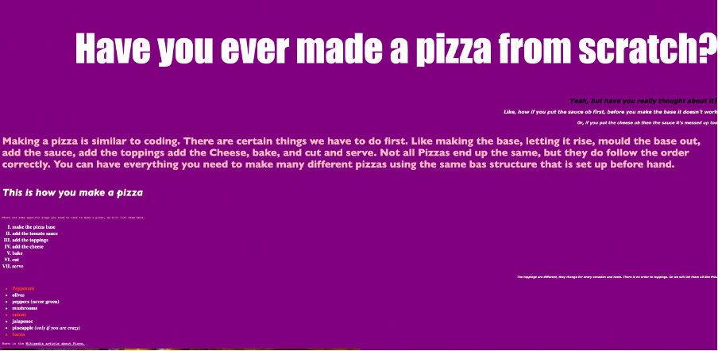
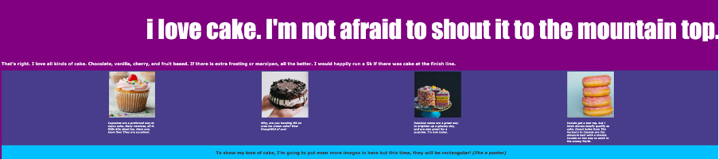
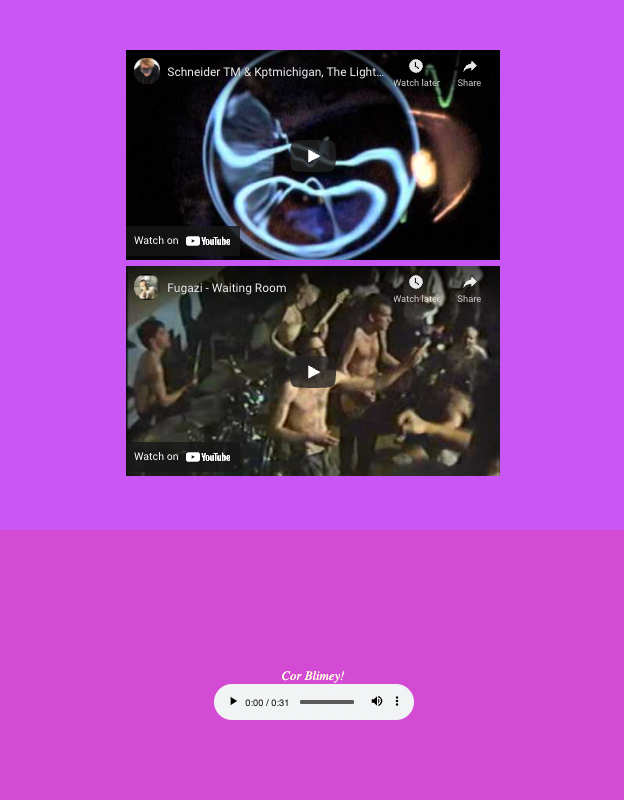
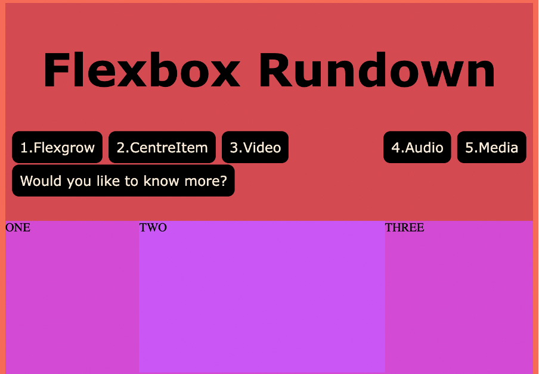
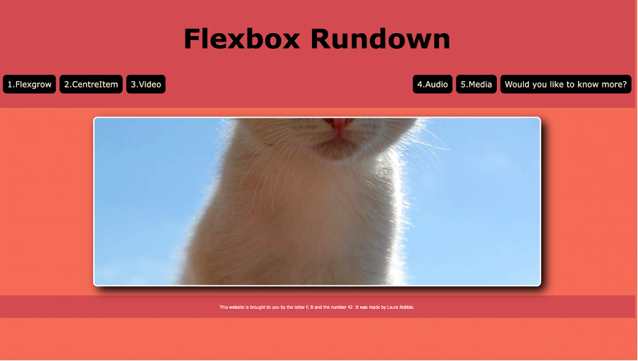

For this task we were asked to do worksheets every week for 5 weeks, this was to develop our understanding of html and css code. I feel working through these worksheets I have learnt a lot, with a bit of help from the worksheets I have managed to code my website with very few issues due to trying to problem solve and using my previous work to work out a solution.


This is from one of the first websites that we created, it has shown me how to use css to create
different styles on a web page, including font sizes and colours, alignment, inserting images, and
lists. In these images we also learned how to code specific atributes to be different than the rest,
eg: the red text instead of white in the list. We make these by using classes to create their own
unique style!
After I had worked out how to put images and words on a page, I was then shown how to include videos
and audio recordings onto the page. I find this quite interesting as it is much the same as putting
on an image. I feel this is an important part of designing a website as most websites now have
videos on them or links to access videos, wether this be part of the website or even ads which
appear, it is an important aspect to keep note of as I feel it will come in handy. From learning
this and completing this website I felt much better in coding the the next website as I felt like I
now have a basic understanding of coding in html and css. I felt very acomplished when I had
finished the webpage as it is not something I have done before however do enjoy doing it. The image
on the right shows the videos and the audio recording within the website I have coded and can be
found at the github link.


After moving on from the last webpage we worked with buttons and multiple web pages to create a
multipage website. The image on the left shows the buttons that we use to move along the page
as well as a like to know more button which is a working button and takes us to a seperate page.
This page is the one on the right, I had started making my website before doing this worksheet,
after doing this worksheet halfway through doing the website I had regretted it as I realised how
easy it was to do a multipage website. I am glad I have now done this as I much prefer the multipage
layout.
